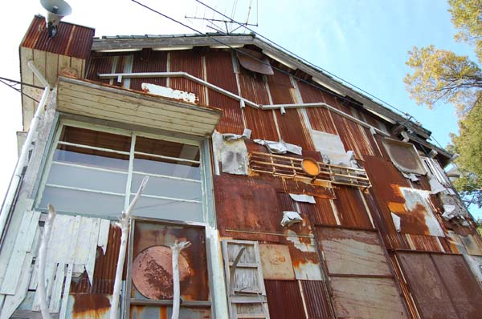
◆はいしゃ---大竹伸朗その名の通り、元歯医者というのは有名なのだけど、こんな歯医者はいやだーー。というぐらいにやりたい放題の大竹伸朗ワールド。このおもちゃ箱ひっくり返した感は爽快。古い家屋に突っ込まれた自由の女神。「Iラブ湯」の象もそうだけど、こういうのって夢の世界。夢の理不尽さの実現がここに。[2010TEXT]
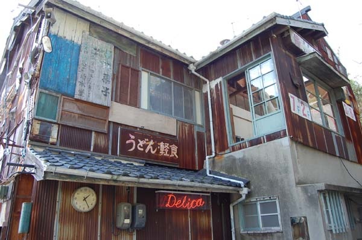
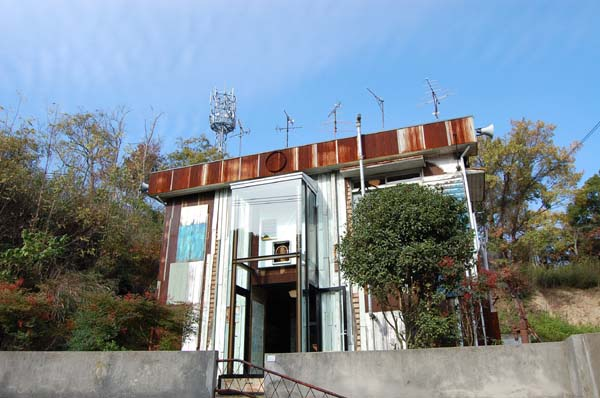
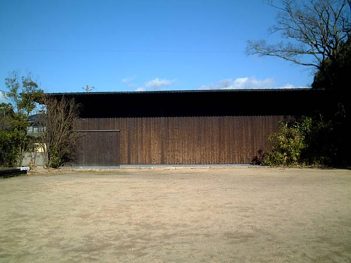
◆南寺---ジェームズ・タレル「Backside of the Moon」/建築設計：安藤忠雄直島の情報もあちらこちらで知ることができるようになって、初めて南寺に訪れる人でも、そこには何が待ち構えているのか心構えができた状態で、鑑賞することになるのだろうけれども… それでもここには心構え以上の感動と、驚きが待ち構えている。
今回わたしは2年ぶり、2回目の南寺だったのだけど 、やはり一度目と同じ感動を感じたし、それよりも新たな驚きもそこにはあった。 ただひたすらに暗闇。
内部に入り、椅子に腰掛ける。光の残像がすこうし残っている目蓋。その残像を追いかけようと眼球が動く。でもそれも椅子の冷たさが馴染んだころには落ち着いて、そのままじっと正面を見つめる。暗闇を見ているのか、それとも見えないというべきなのか。 この耐える時。
でもその時は突然。 「ぽっ」と何かに気がつく。それからはそれをきっかけにして確かな形を捉えるまでじっと。 席と立ち 手をのばし、その形に向かう。一歩、一歩。 その一歩を踏み出すとき、ふっと床が抜けて、それこそ常闇の国に落とされるのではないかという恐怖。 それでも一歩。また一歩。 そしてひかりに手を伸ばす瞬間。 タレルの魔法。 2回目で経験があるせいなのか、今回は良く見えた。むしろ明るすぎるくらいに感じたのだけどどういうことやら？やはり経験なのか？それとも2年の間に光を感じる能力が上がったのかしらん？[2007TEXT]
そしてさらに今回の訪問。団体さん対策（回転をよくするため）のため明るくしてあるとのことでした。昔、体験している人には「えっ！」と思うぐらいすぐに明るさを感じるはず。そこにあった明るさって意外と記憶してるものなんだなぁと。明るさを感じるまで5～10分というとこかな。それまでは闇との戦い。[2010TEXT]
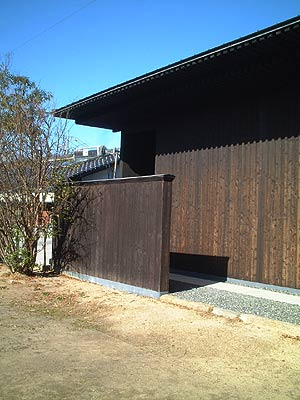
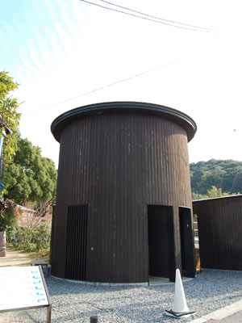
◆碁会所----須田悦弘畳に散った椿の花。
ベネッセハウスの雑草の驚きもいいけど、この椿も「木彫なんだぁ！」とまじまじと見つめてしまう出来。
それにしても、この作品はちょっとエロティックに感じてしまうのは私だけ？
つぼみがひらいたばかりの椿があちこちと散らかるはずのない畳の上に。
建物中央には本物の椿が植えられています。時期が合えば両方楽しめるはず[2010TEXT]
◆石橋---千住博 滝が流れる古民家。ざあざあと、ごうごうと流れる音を聞くためにしばし冷たい床の上に座す。つるっとした塗りのような床は水面のように滝をうつしている。
瀑布という言葉があるぐらい滝には荒々しいものを感じるはずなのに、ここには沈黙が似合う。それでもここに座っているとごうごうとした滝壺の勢いすら感じる。
受付の背面には「Falling Color」があるので、そちらもおすすめ（遠くから鑑賞することになりますが…）[2010TEXT]
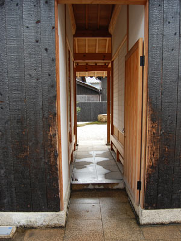
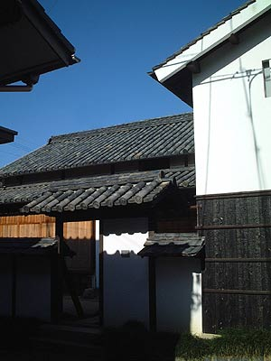
◆ 角屋---宮島達男「Sea of Time '98」他さて角屋。門をくぐったら「あーここは違うヨ！ここはオバちゃんの家だからね」…とでも言われそうな、 まだ誰かが生活していてもおかしくないようなそんな一軒が「角屋」。
直島のことを詳細に紹介している新潮社の「直島 瀬戸内アートの楽園」の角屋の紹介ページでは縁側でこの一帯のアイドル猫「みいちゃん」が寛いでいる写真が掲載されているのだけど（本当にこの写真は秀逸だ…）、そんな猫やオバちゃんが角屋には良く似合う。
重い木戸を開けて中へ。縁側の陽だまりとは逆に暗く、目に飛び込むのはデジタルカウンターの点滅。 居間にあたるであろう場所には水が張られ、その中には不規則に点滅するデジタルカウンター。この直島の住民の協力によってこのカウンターの点滅スピードは設定されたのだけどその一つ一つの規則性、しかし集合するとその規則性は不規則性にも見え、それが小さな社会として息づいているような気さえする。
しばし靴を脱ぎ、床に座り水の中のデジタルカウンターを見つめる。 そのほかに土間には大きなカウンターの窓。外からも見られるので内と外とで見るのも楽しい。 一旦外にでて、縁側のガイドさんに挨拶をして左手の蔵の中へ。 掛け軸にカウンターを描いた「チェンジング・ランドスケープ」があるのだけど。 すんません。私これはよくわかりませんでしたわ。ま、今後の課題ということで。 [2007TEXT]
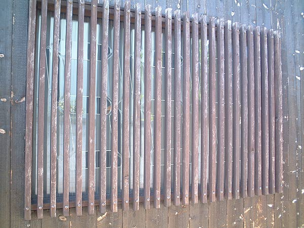
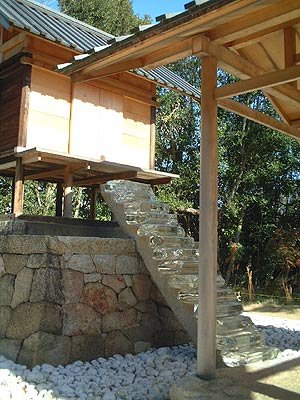
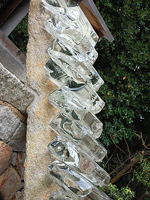
◆ 護王神社---杉本博司「Appropriate Proportion」角屋を出て左手にそのまま進み、鳥居をくぐり階段を上った先が、真っ白な石で敷き詰められた 護王神社。
「真っ白い石は骸骨をイメージしてるんだヨ」…とガイドのおじちゃん。
はぁぁ。そーいえばまるっこくて確かにホネに見えるかも。
「それでね、あの階段は光学ガラスなんだヨ」…とガイドのおじちゃん。
へー。そりゃ高いねぇ～ 「地下に行ってみ。今、一組入って懐中電灯もってってるからちょっと待ってな。」 なんだか無茶苦茶親切なおじちゃん。 さて護王神社に向かって右手下から入ることができる石室。 その廊下は50センチほどだろうか？とにかく狭い。
奥まで行くと光学ガラスの階段が地上から地下まで続いているのが見える。そしてその地面には水。 ひんやり。そしてほのかな外界からのあかり。 引き返し、細い廊下を出て行くと、その先に見えるのは瀬戸内海と小豆島。外界への産道のような、そんな細く暗い廊下を抜けると外界がとても美しく見える。[2007TEXT]